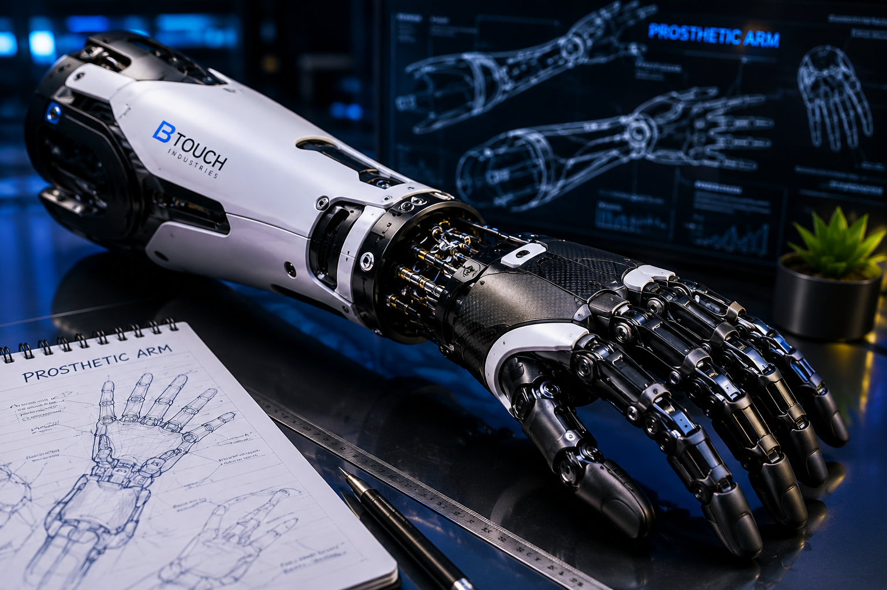

My Projects
Building Innovative Engineering Solutions

Smart Prosthetic Arm
Developed an intelligent prosthetic arm integrating mechanical design, embedded systems, and assistive technologies to improve mobility and accessibility.
View Project
Ultrasonic Radar System
Designed a radar-based obstacle detection system using ultrasonic sensors for real-time monitoring and visualization.
View Project
Certify Secure
Created a certificate authentication platform designed to reduce document fraud and improve trust in digital credentials.
View Project
AI Irrigation System
Built an AI-powered irrigation solution for farmers in slope regions to optimize water usage and improve crop productivity.
View Project